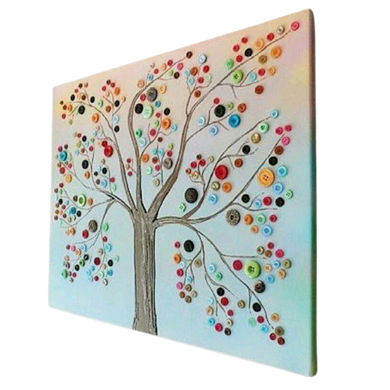

Hiasan Dinding dari Kancing Baju

Kita sering kali mempunyai kancing baju yang tidak terpakai atau sisa dari menjahit baju. Untuk itu, produk ini cocok untuk digunakan menjadi salah satu referensi terutama bagi para penjahit yang sering kali menemukan kancing yang berlebih/sisa. Karena tidak hanya cantik, tetapi produk ini dapat dibuat menjadi berbagai ide. Kancing bisa dipakai menjadi bahan kolase dengan bentuk bermacam-macam, salah satunya adalah bentuk pohon seperti ini . Berikut cara membuat hiasan dinding dari kancing baju:
- Alat :
- Gunting / cutter
- Lem bakar
- Bahan :
- Kardus
- Kancing baju
- Cat warna
- Langkah kerja :
- Potong kardus hingga berbentuk batang pohon
- Cat alas kardus ( warna sesuai selera )
- Cat batang pohon
- Tempelkan potongan batang pohon pada kardus yang dijadikan sebagai alas
- Hias kancing menggunakan lem bakar ( opsional )
- Tempelkan kancing di sekitar ranting membentuk dahan pohon
- Harga bahan :
- Lem bakar : Rp.10.000
- Cat : Rp.12.000
- Kancing baju : Rp.20.000
- Harga jual : Rp.15.000
- Laba : Rp.4.500